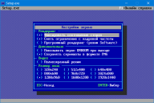

 Настройки экрана
Раздел настроек экрана позволяет выбрать полноэкранный или оконный режим, и выбрать дополнительные опции экрана.
Рендеринг
- Фиксировать соотношение сторон. Позволяет получить соотношение сторон экрана в формате 3:4. Отключение данной растянет картинку на полный размер окна без какой-либо коррекции.
- Снять ограничение с кадровой частоты. Снятие оригинального ограничения кадровой частоты 35 fps. Смена кадров станет более плавной, но с учётом вертикальной синхронизации - количество fps не превысит частоту обновления монитора. Например, при частоте обновления монитора 60 Hz будет использовать максимально 60 fps.
- Програмный рендеринг (режим Software). При его активации, рендеринг картинки будет происходить через центральный (CPU), а не графический (GPU) процессор, что позволит запустить игру даже на "Стандартном графическом адаптере VGA". На игровой функционал это не влияет, однако пропадёт плавность в смене кадров. В целом, поведение графики будет похоже на Chocolate Doom версий 1х-2х.
Дополнительно
- Показывать экран ENDOOM при выходе. По выходу из игры будет отображаться информационный текстовый экран.
- Сохранять скриншоты в формате PNG. в данном формате информация будет записана "как есть", тоесть размер картинки будет равен размеру игрового окна. В случае отключения, скриншоты будут сохраняться в устаревшем формате PCX.
Видео
- Полноэкранный режим. Переключение оконного и полноэкранного режима игрового окна. Также доступна комбинация клавиш
ALT+ENTER.
|
{kind=link}